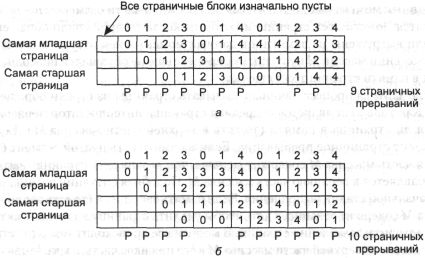
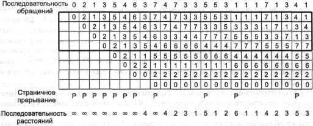
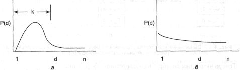
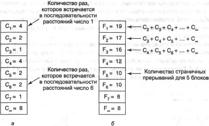
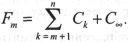

Моделирование алгоритмов замещения страниц
За годы было проведено несколько работ, посвященных теоретическому моделированию
алгоритмов замещения страниц. В данном разделе мы обсудим некоторые из этих
идей, чтобы увидеть, как работает процесс моделирования.
Аномалия Билэди
Интуитивно может показаться, что чем больше страничных блоков имеет память,
тем меньше будет происходить страничных прерываний. Достаточно удивителен тот
факт, что это не всегда так. Билэди (Belady) и другие исследователи в своей
работе [23] описали обнаруженный ими контрпример, в котором алгоритм FIFO вызывал
больше страничных прерываний при четырех страничных блоках, чем при трех. Эта
странная ситуация стала известна как аномалия Билэди. Она проиллюстрирована
на рис. 4.22 для программы с пятью виртуальными страницами, пронумерованными
от 0 до 4. Буквы «P» показывают, какие обращения вызывают страничные
прерывания. Обращения к страницам происходят в следующем порядке:
012301401234
На рис. 4.22, а показано, как при наличии трех страничных блоков вызывается
в целом девять страничных прерываний. На рис. 4.22,6 изображены десять страничных
прерываний при работе с четырьмя страничными блоками.

Рис. 4.22. Аномалия Билэди: алгоритм FIFO при работе с тремя страничными
блоками (а);
алгоритм FIFO при наличии четырех страничных блоков (б)
Магазинные алгоритмы
Аномалия Билэди настолько потрясла многих исследователей в области кибернетики,
что они начали изучать данную ситуацию, и это привело к развитию целой теории
алгоритмов подкачки страниц и их свойств. Хотя большая часть данных исследований
лежит далеко за пределами нашей книги, ниже мы кратко рассмотрим основные моменты.
За более подробной информацией следует обратиться к [220].
Вся работа началась с наблюдения, что каждый процесс с момента запуска формирует
последовательность обращений к памяти. Любая ссылка к памяти соответствует определенной
виртуальной странице. Таким образом, концептуально доступ процесса к памяти
можно описать (упорядоченным) списком номеров страниц. Этот список называется
последовательностью или строкой обращений (reference string) и играет
главную роль во всей теории. Для простоты далее мы будем рассматривать вариант
машины с одним процессом, то есть когда каждая машина имеет единственную определенную
последовательность обращений (при нескольких процессах мы должны были бы принять
во внимание чередование их строк обращений вследствие многозадачности).
Систему со страничной организацией памяти можно охарактеризовать следующими
тремя объектами:
1. Последовательность обращений для выполняемого процесса.
2. Алгоритм замещения страниц.
3. Количество доступных в памяти страничных блоков m.
Мысленно мы можем представить себе абстрактный интерпретатор, работающий
следующим образом. Он поддерживает внутренний массив М, отслеживающий состояние
памяти. Количество элементов массива равно количеству виртуальных страниц процесса,
это число мы назовем n. Массив М разделен на две части. В верхней
части, куда входит m записей, расположены все страницы, которые в данный
момент находятся в памяти. В нижней части размером n — m записей содержатся
номера всех страниц, к которым когда-то произошло обращение, но они были выгружены
из памяти и в данный момент в ней отсутствуют. В исходном положении массив M
пуст, так как процесс еще не обращался ни к одной странице, и в памяти страниц
тоже еще нет.
После запуска процесс начинает вызывать страницы из строки обращений по одной.
Как только появляется очередная страница, интерпретатор проверяет, находится
ли страница в памяти (то есть в верхней части массива М). Если нет, происходит
страничное прерывание. Если в памяти есть пустой сегмент (то есть верхняя часть
массива М содержит меньше, чем m записей), страница загружается
и добавляется в верхнюю часть массива М. Подобная ситуация возникает
только на начальной стадии выполнения. Если память заполнена (то есть верхняя
часть массива М содержит m записей), то, чтобы удалить страницу
из памяти, активизируется алгоритм замещения страниц. В модели все происходит
так: одна страница перемещается из верхней части массива М в его нижнюю
часть, а требуемая страница входит наверх. Кроме того, верхняя и нижняя части
массива могут быть упорядочены отдельно друг от друга.
Чтобы прояснить функционирование интерпретатора, рассмотрим конкретный пример,
использующий алгоритм замещения страниц LRU. Виртуальное адресное пространство
имеет восемь страниц, а в физической памяти есть четыре страничных блока. Сверху
на рис. 4.23 изображена последовательность обращений, состоящая из 24 страниц:
021354637473355311171341
Ниже последовательности обращений расположена таблица из 25 столбцов и 8
строк. Первый столбец не заполнен, так как он отражает состояние массива М
до запуска процесса. Каждый следующий столбец демонстрирует массив М
после того, как одна из страниц была извлечена обращением к ней и обработана
алгоритмом подкачки страниц. Жирный контур отделяет верхнюю часть массива М,
то есть первые четыре элемента, соответствующие страничным блокам в памяти.
Страницы внутри жирной рамки находятся в памяти, страницы, расположенные ниже,
были выгружены на диск.

Рис. 4.23. Состояние массива памяти М после обработки каждого элемента
строки обращений.
Последовательность расстояний будет обсуждаться в следующем разделе
Первой в последовательности обращений является страница 0, поэтому она помещается
на самый верх памяти, как показано во втором столбце. Следующая страница под
номером 2 попадает в верхнюю ячейку третьего столбца. Это действие сдвигает
вниз страницу 0. В данном примере заново загружаемая страница всегда занимает
верхнюю ячейку, а все остальное по необходимости сдвигается вниз.
Каждая из первых семи страниц в последовательности обращений вызывает страничное
прерывание. Первые четыре можно обработать, не удаляя страницы из памяти, но
начиная со страницы 5 загрузка новой страницы требует удаления старой.
Второе обращение к странице 3 не вызывает страничного прерывания, потому
что она уже находится в памяти. Тем не менее интерпретатор убирает ее с того
места, где она располагалась, и помещает в верхнюю ячейку столбца, как показано
на рисунке. Процесс продолжает работу некоторое время, до тех пор, пока не происходит
обращение к странице 5. Эта страница переносится из нижней части массива M
в верхнюю (то есть она загружается в память с диска). Всякий раз, когда страница,
к которой обращается процесс, не находится внутри рамки, очерченной жирной линией,
происходит страничное прерывание, что отмечено буквами «П» в строке
под таблицей.
Теперь кратко перечислим некоторые свойства этой модели. Во-первых, когда
происходит обращение к странице, она всегда перемещается в верхнюю запись массива
М. Во-вторых, если запрашиваемая страница уже находилась в массиве М,
все страницы выше нее сдвигаются на одну позицию вниз. Переход из рамки за ее
пределы соответствует удалению страниц из памяти. В-третьих, страницы, находящиеся
ниже объекта обращения, не перемещаются. Таким образом, содержимое массива М
в точности представляет собой компоненты алгоритма LRU.
Хотя в этом примере используется алгоритм LRU, данная модель с тем же успехом
работает и с другими схемами. В частности, существует один класс алгоритмов,
которые представляют особенный интерес, они обладают свойством:
М(m,r) с М(m + 1,r),
где число m обозначает количество страничных блоков, а r —
это индекс в последовательности обращений. Изображенное выше выражение означает,
что множество страниц, после r обращений попавших в верхнюю часть массива
М, для памяти, имеющей m страничных блоков, также входит в массив
М, если память состоит из m + 1 страничных блоков. Другими словами,
если мы увеличим размер памяти на один страничный блок и выполним процесс заново,
то в каждый момент времени все страницы, присутствовавшие в памяти во время
первой обработки, при втором запуске будут также находиться в памяти вместе
с еще одной дополнительной страницей.
Если изучить пример на рис. 4.23 и немного подумать о том, как он функционирует,
должно стать ясно, что алгоритм LRU удовлетворяет данному условию. Некоторые
другие алгоритмы (например, оптимальный алгоритм замещения) также обладают этим
свойством, но алгоритм FIFO его не имеет. Алгоритмы, удовлетворяющие условию,
наложенному на массив М, называются магазинными алгоритмами (stack
algorithms). Они не подвержены аномалии Билэди и, соответственно, намного более
любимы теоретиками, занимающимися виртуальной памятью.
Строка расстояний
Часто для магазинных алгоритмов удобно представить последовательность обращений
в более абстрактном виде, чем фактические номера страниц. С этого момента обращение
к странице будет обозначаться с помощью расстояния от верха стека, где расположена
запрашиваемая страница. Например, обращение к странице 1 в последнем столбце
на рис. 4.23 равносильно ссылке на страницу, имеющую расстояние 3 от вершины
стека (потому что страница 1 перед запросом находилась на третьем месте).
О страницах, к которым еще не было обращений и поэтому они еще не попали в стек
памяти (то есть они еще не находятся в массиве М), говорят, что они имеют
расстояние °° (бесконечность). Строка расстояний для примера на рис.
4.23 изображена внизу рисунка.
Заметим, что строка расстояний зависит не только от последовательности обращений,
но и от алгоритма подкачки страниц. При одной и той же последовательности обращений
различные алгоритмы замещения страниц могут выбирать для удаления разные страницы.
В результате возникает свой порядок стека для каждого алгоритма.
Статистические свойства последовательности расстояний сильно влияют на производительность
алгоритма. На рис. 4.24, а представлена функция, обозначающая плотность
вероятности для вхождений страниц в (воображаемую) строку расстояний d.
Большинство попаданий страниц находится между 1 и k. Если в памяти всего
k страничных блоков, то страничные прерывания происходят редко.

Рис. 4.24. Плотность вероятности для двух гипотетических строк расстояний
Напротив, на рис. 4.24, б обращения к памяти так разбросаны, что единственный
способ избежать огромного количества страничных прерываний — это предоставить
программе столько страничных блоков, сколько она использует виртуальных страниц.
Если вам приходится работать с подобными программами, значит, у вас, видимо,
просто плохая карма.
Прогнозирование частоты страничных прерываний
Одно из приятных свойств последовательности расстояний заключается в том, что
ее можно использовать для прогнозирования количества страничных прерываний,
которые могут произойти в памяти различного размера. Мы продемонстрируем, как
можно выполнить подобные вычисления на основе примера с рис. 4.23. Нашей целью
является следующее: сделать один проход по строке расстояний и по собранной
информации суметь предсказать, сколько страничных прерываний мог бы вызвать
процесс в памяти размером в 1, 2, 3, ..., n страничных блоков, где n
— это количество виртуальных страниц в адресном пространстве процесса.
Алгоритм начинается с изучения последовательности расстояний, страница за
страницей. Он подсчитывает, сколько раз встречается число 1, число 2 и т. д.
Пусть число i встречается в строке расстояний Ci количество
раз. Вектор С для последовательности расстояний на рис. 4.23 изображен
на рис. 4.25, а, В этом примере получилось так, что четыре раза происходит
обращение к странице, уже находящейся на вершине стека. Три раза запрашивается
следующая страница и т. д. Пусть С°° — это количество раз,
которое встречается символ °° в последовательности расстояний.

Рис. 4.25. Вычисление количества страничных прерываний из последовательности
расстояний: вектор С (а); вектор F(б)
Теперь вычислим вектор F в соовтветствии с формулой

Величина Fm обозначает количество страничных прерываний,
которое произойдет для заданной последовательности расстояний и m страничных
блоков. На рис. 4.25, б показан вектор F для строки расстояний,
представленной на рис. 4.23. Например, величина F1, равная
20, означает, что если память состоит всего лишь из одного страничного блока,
то из 24-х обращений в последовательности вызовут страничное прерывание все,
кроме четырех, которые запрашивают ту же страницу, что и предыдущая ссылка.
Чтобы увидеть, как работает формула, вернемся к рамке, очерченной жирной
линией на рис. 4.23. Пусть m - это количество страниц в верхней части
массива М. Страничное прерывание происходит всякий раз, когда элемент
последовательности расстояний равен m+1 или больше. В написанной выше
формуле суммируется то количество раз, которое встречаются в последовательности
такие элементы. Эта модель также может использоваться и для других прогнозов
[220].